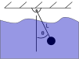

import numpy as np
from numpy.lib.scimath import sqrt # allow sqrt to return complex numbers
import matplotlib.pyplot as plt
from scipy.integrate import solve_ivp
plt.style.use('fivethirtyeight')
Building Quiz_05¶

A pendulum is placed inside a viscous fluid. The motion of the pendulum is subject to 2 external forces:
gravity: \(F_g = mg\)
viscous damping: \(F_f =-b\mathbf{v}= -bL\dot{\theta}\hat{e}_{\theta}\)
The final equation of motion is as such
a. Find the variation in the Lagrangian, \(\delta L\)
b. Write the nonconservative virtual work, \(\delta W^{NC}\)
c. Show that \(\delta L + \delta W^{NC}=0\) results in the final equation of motion.
Linear solution¶
Equation of motion in a linearized system:
where
\(\omega = \sqrt{\frac{g}{L}}\)
\(\zeta = \frac{b}{2m}\sqrt{\frac{l}{g}}\)
This is a damped harmonic oscillator, so the solution will come in 3 forms:
underdamped \(\zeta<1\)
critically damped \(\zeta = 1\)
overdamped \(\zeta > 1\)
Consider a pendulum with length, \(L=1~m\), mass of \(m=0.1~kg\), and 3 different damping ratios:
\(\zeta\) |
b [kg/s] |
|---|---|
0.1 |
0.063 |
1 |
0.63 |
2 |
1.25 |
\(\theta(t) = e^{-\zeta\omega t}(a_1 e^{i\omega t\sqrt{1-\zeta^2}} + a_2 e^{-i\omega t\sqrt{1-\zeta^2}})\)
\(\dot{\theta}(t) = -\zeta\omega e^{-\zeta\omega t}(a_1 e^{i\omega t\sqrt{1-\zeta^2}} + a_2 e^{-i\omega t\sqrt{1-\zeta^2}}) +i\omega \sqrt{1-\zeta^2}e^{-\zeta\omega t}(a_1 e^{i\omega t\sqrt{1-\zeta^2}} - a_2 e^{-i\omega t\sqrt{1-\zeta^2}})\)
where
Note: The default
np.sqrtreturns an error if you ask fornp.sqrt(-1). Above, thenumpy.lib.scimath.sqrtis imported to allow complex number algebra as such:from numpy.lib.scimath import sqrt
L = 1
g = 9.81
m = 0.1
z = 0.1
w = sqrt(g/L)
def find_constants(state0, z):
A = np.array([[1, 1],
[1j*w*sqrt(1-z**2)-z*w, -1j*w*sqrt(1-z**2)-z*w]])
b = np.array(state0)
a = np.linalg.solve(A,b)
return a
theta = lambda t, a, z: np.exp(-w*z*t)*(a[0]*np.exp(1j*w*t*sqrt(1-z**2))+a[1]*np.exp(-1j*w*t*sqrt(1-z**2)))
dtheta = lambda t, a, z: -w*z*np.exp(-w*z*t)*(a[0]*np.exp(1j*w*t*sqrt(1-z**2)) +\
a[1]*np.exp(-1j*w*t*sqrt(1-z**2)))+\
1j*w*t*sqrt(1-z**2)*np.exp(-w*z*t)*(a[0]*np.exp(1j*w*t*sqrt(1-z**2)) -\
a[1]*np.exp(-1j*w*t*sqrt(1-z**2)))
t = np.linspace(0,6)
for z in [0.1, 0.9999, 2]:
a = find_constants([np.pi/10, 0], z)
plt.plot(t, 180/np.pi*theta(t, a, z).real, label = r'$\zeta$ = {:.1f}'.format(z))
plt.xlabel('time (s)')
plt.ylabel(r'$\theta$ (degrees)')
plt.legend();
Phase plot for damped system¶
The phase plot for a system plots the input state variables, i.e. \(\theta~and~\dot{\theta}\). In a previous notebook, you looked at the results for an undamped system. With damping, both state variables move towards 0.
z= 0.2 #0.9999
t = np.linspace(0,10, 200)
for pert in [0.1, 0.2, 0.3]:
a = find_constants([np.pi/10+pert, 0], z)
plt.plot(theta(t, a, z).real, dtheta(t, a, z).real)
plt.title('Phase plot for damped pendulum $\zeta$ = {:.1f}'.format(z))
plt.xlabel(r'$\theta$')
plt.ylabel(r'$\dot{\theta}$');
Approximate nonlinear solution¶
The final equation of motion is not linear for \(\theta \approx 1\),
You can numerically integrate this equation for any angle \(\theta\)
create 2 first-order differential equations \(\dot{\mathbf{y}} = f(\mathbf{y})\) where \(\mathbf{y}=[\theta,~\dot{\theta}]\)
use
solve_ivpto integrate the equation with initial conditions
def damped_pendulum(t, y, z, w=sqrt(g/L)):
'''
damped_pendulum(t, y, z, w)
Return the derivative for a damped pendulum system
dy[1] + 2*z*w*y[1] + w**2*sin(y[0])
Parameters
----------
t: current time
y: current state = [theta (rad), dtheta/dt (rad/s)]
z: damping ratio (determined from eqn of motion)
w: natural frequency for linear system
Returns
-------
dy: derivative of state, y, at time, t
[dtheta/ddt (rad/s), ddtheta/ddt (rad/s/s)]
'''
dy = np.zeros(y.shape)
dy[0] = y[1]
dy[1] = -2*w*z*y[1] - w**2*np.sin(y[0])
return dy
Integrate the exact differential equation with an approximation¶
The differential equation is now exact, but you don’t have a way to solve for the exact function \(\theta(t)\). Use the function solve_ivp to find the solution over a given time interval [0, 10] seconds and evaluated at the same points as the previous linear solution, t_eval = t.
sol = solve_ivp(lambda t, y: damped_pendulum(t, y, 0.2),
[0, 10], # timespan [ 0s to 10s]
[np.pi/10, 0], # initial conditions [18 deg, 0 rad/s]
t_eval = t)
plt.plot(sol.t, 180/np.pi*sol.y[0])
sol = solve_ivp(lambda t, y: damped_pendulum(t, y, 0.2),
[0, 10], # timespan [ 0s to 10s]
[np.pi/2, 0], # initial conditions [90 deg, 0 rad/s]
t_eval = t)
plt.plot(sol.t, 180/np.pi*sol.y[0])
plt.xlabel('time (s)')
plt.ylabel(r'$\theta$ (degrees)')
plt.title(r'Large and small angle oscillations for $\zeta=0.2$');
Wrapping up¶
You have created 2 solutions for the damped pendulum differential equation:
exact solution to the linearized differential equation
approximate integration of the exact differential equation